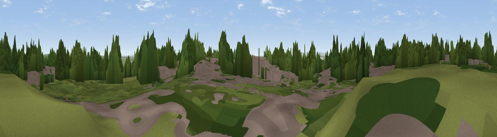

Woolton Hill
#38697 in England · top 74% of its area beats it · near HalewoodWhere it is
The exact computed spot (SJ 41921 87377). Click the marker for map links.
The view, rendered

A 360° render of this exact spot computed from the terrain model, tree cover and land cover — summer colours, afternoon light, calibrated against photographs of famous viewpoints. Real trees, hedges and buildings will differ in detail.
The panorama
Grey silhouette: terrain skyline in each direction (720 bearings, Earth curvature and refraction included). Dashed green: skyline with trees (+15 m) and buildings (+8 m) as obstacles. Blue strip: how far the ground is visible on each bearing.
Where the view opens
Wedge length = distance to the farthest visible ground on that bearing (vegetation-aware). Rings at 10, 25 and 50 km.
What fills the view
42% woodland · 25% built-up · 23% grassland · 6% cropland · 4% water
Angular shares of the visible panorama (visual magnitude), not map area. Landscape diversity 0.59 (0–1 Shannon).
Key numbers
More beautiful places nearby
The staircase of upgrades: each row has a higher view potential than everything closer. Driving times are estimates from straight-line distance, calibrated against real road routing — check an actual route before setting out.
| Place | Direction | Drive | Score |
|---|---|---|---|
| Viewpoint near New Ferry | W · 5 km | ~12 min | 49.3 |
| Viewpoint near New Ferry | WSW · 8 km | ~15 min | 50.5 |
| Hutchinson's Hill | ESE · 9 km | ~17 min | 57.4 |
| Halton Hill | ESE · 13 km | ~24 min | 69.0 |
| Helsby Hill | SSE · 14 km | ~25 min | 74.6 |
| Viewpoint near Harthill | SSE · 34 km | ~51 min | 80.5 |
| Rivington Pike | NE · 35 km | ~53 min | 81.9 |
| White Brow | NE · 35 km | ~53 min | 82.9 |
53.38003, -2.87455 · source: dobih hill · position refined by local search. Computed location — check access rights before visiting.